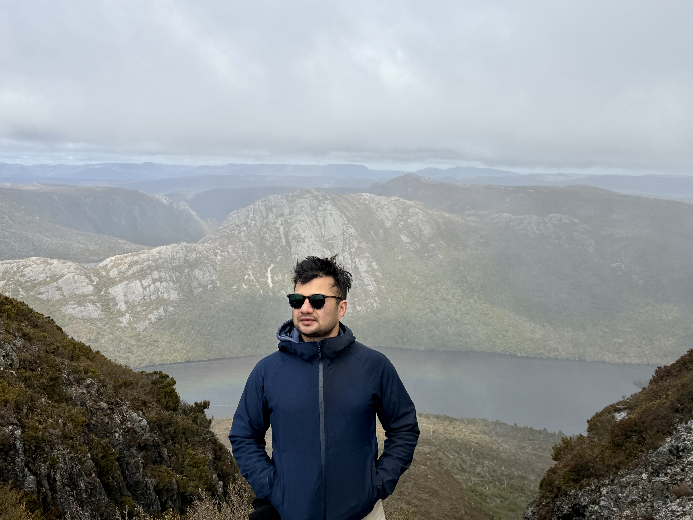

PhD Candidate · Urban Climate
Shankar Sharma
Climate Change Research Centre (CCRC) | UNSW Sydney | ARC Centre of Excellence for 21st Century Weather
I investigate how urbanisation modifies rainfall and thermal environments using high-resolution WRF simulations with updated urban morphology datasets, together with satellite precipitation products (GPM IMERG). My research combines convection-permitting modelling, Local Climate Zone datasets, and satellite observations to understand urban rainfall signals and separate urbanisation effects from natural climate variability.

Researcher snapshot
What I work on
Urban rainfall processes, satellite retrieval uncertainties, and convection-permitting simulation of urban precipitation and thermal environments over Greater Sydney.
Methods
WRF-ARW modelling, Python & Xarray-based climate analysis, NetCDF workflows, HPC, satellite remote sensing, GIS, and Local Climate Zone classification.
Where I am
Where I am Based at the Climate Change Research Centre (CCRC), UNSW Sydney, Sydney, NSW, Australia, and affiliated with the ARC Centre of Excellence for 21st Century Weather. Previously affiliated with the ARC Centre of Excellence for Climate Extremes.
Research themes
Urban rainfall trends & IMERG retrieval uncertainty
Quantifying how cities modify long-term rainfall signals in GPM IMERG, and separating retrieval artefacts from physical urban precipitation signatures.
Convection-permitting WRF for Greater Sydney
High-resolution WRF simulations exploring how urban expansion shapes precipitation patterns and human thermal exposure across Sydney.
Multi-decadal Local Climate Zone datasets
Scalable LCZ mapping of urban morphology — providing a temporally consistent basis for urban-climate modelling and urbanisation impact attribution.
Urban heat & human thermal exposure
Linking urban morphology, land cover, and atmospheric drivers to surface and biometeorological heat stress under continued urban expansion.
Read the long-form descriptions on the Research page.